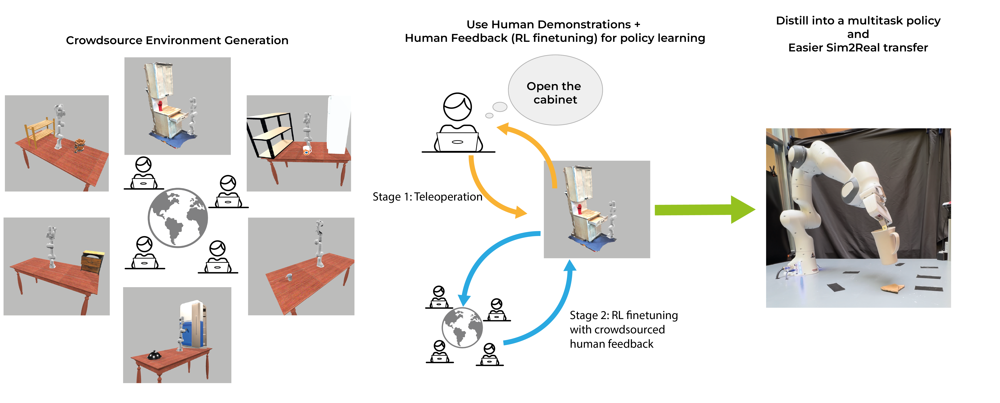
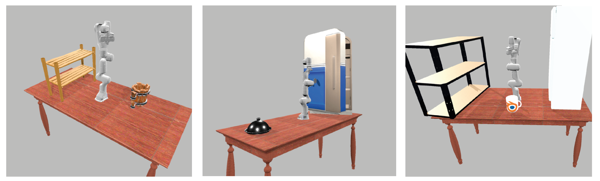

LR2S
Leveraging Real to Sim for Crowdsourcing Policy Learning

Abstract
TODO: explain motivation and idea
API for easily generation of environments
Our new interface allows non-expert users to easily create new diverse and realistic scenes, using either the large variety of 3D objects available online or taking a video of the real object or real world environment. This interface allows the users to cut meshes, add joints, add sites, move objects around, rotate them, and finally export as a USD file that can then be directly imported in the simulator as a standard gym environment without any engineering assistance.Generation of environments using objects from Objaverse-XL
Generation of environments using 3D scans from videos

Policy Learning

Accomplished goals at the end of 5 different evaluation episodes along training in the real world.